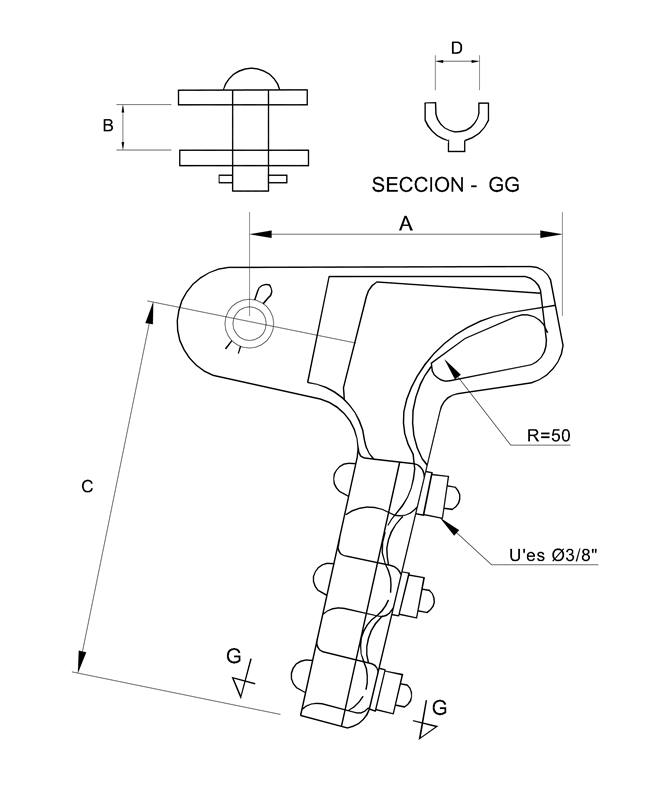
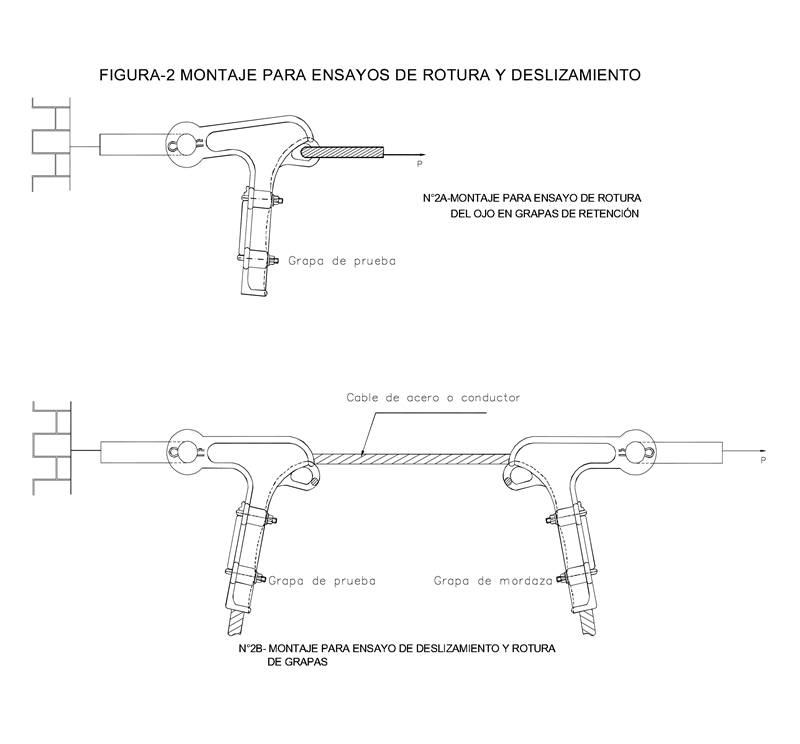

Siempre es más fácil conocer las normas ENEL-CODENSA
Rolex Rolex gold watch, compared with ordinary materials, gold watches are often expensive, but the replica rolex gold watch has the role of swiss replica watches hedging, so that it often becomes the first choice for collectors. The gold watch has value in the world, largely because the omega replica watch brand launched a commemorative limited edition watch or a replica hublot complex movement process or artistic attainments deep watches, mostly preferred gold precious metals such material. These watches tend to have a strong hedging function, therefore, Rolex Rolex gold watch reputation.

ET365 Grapa terminal tipo pistola metálica para MT
Datos adicionales
Número de especificación
ET365
Fecha de vigencia
02/12/2019
Herramientas adicionales
- Contenido Ocultar
- 1. OBJETO
- 2. ALCANCE
- 3. CONDICIONES DE SERVICIO
- 4. SISTEMA DE UNIDADES
- 5. NORMAS RELACIONADAS
- 6. REQUERIMIENTOS TÉCNICOS PARTICULARES
- 6.1 GEOMÉTRICOS
- 6.2 QUÍMICOS
- 6.3 ACCESORIOS
- 6.4 TRATAMIENTO TÉRMICO
- 6.5 REQUISITOS MECÁNICOS
- 6.6 REQUISITOS DE RECUBRIMIENTO DE LOS ELEMENTOS DE ACERO
- 6.7 REQUISITOS DEL ACABADO
- 7. CRITERIOS DE ACEPTACIÓN O RECHAZO
- 8. PRUEBAS
- 8.1 PRUEBA TIPO
- 8.1.1. Prueba dimensional
- 8.1.2. Análisis químico
- 8.1.3 Prueba mecánica
- 8.1.4 Prueba del galvanizado
- 8.2 PRUEBAS DE RECEPCIÓN
- 9. MARCACIÓN, EMPAQUE Y ROTULADO
- 9.1 MARCACIÓN
- 9.2 EMPAQUE
- 9.3 ROTULADO
- 10. REQUISITOS DE LAS OFERTAS
- 11. FIGURAS
- ANEXO. TABLA DE CARACTERÍSTICAS TÉCNICAS GARANTIZADAS
1. OBJETO
Esta especificación técnica tiene por objeto establecer las características y requisitos técnicos que deben cumplir y los ensayos a los cuales deben ser sometidos las grapas terminal metálica tipo pistola para líneas aéreas media tensión en sistemas de distribución con conductores ACSR. o de aleación de aluminio.2. ALCANCE
Esta especificación técnica se aplicará en todas las grapas terminal metálica tipo pistola para líneas aéreas de media tensión que adquiera ENEL CODENSA.3. CONDICIONES DE SERVICIO
Las grapas terminal metálica tipo pistola, se emplean en redes de dsitribución, estos elementos serán empleados a la intemperie bajo las siguientes condiciones:| CARACTERÍSTICAS AMBIENTALES | |
| Altura sobre el nivel del mar | Hasta 2 700 m.s.n.m. |
| Ambiente | Tropical |
| Humedad relativa | Desde 100% a el 20% |
| Temperatura máxima y mínima | +45 °C y -5 °C respectivamente |
| Polución | Media |
| CARACTERÍSTICAS ELÉCTRICAS | |
| Tensión Nominal | 11,4 kV, 34,5 kV, 115kV |
| Frecuencia del sistema | 60 Hz |
Cable de guarda: calibre 3/8 “ bajo la especificación técnica E-MT-028.
4. SISTEMA DE UNIDADES
En todos los documentos técnicos se deben expresar las cantidades numéricas en unidades del sistema Internacional (S.I.). Si se usan catálogos, folletos o planos, en sistemas diferentes de unidades, deben hacerse las conversiones respectivas.5. NORMAS RELACIONADAS
| NORMA | DESCRIPCION |
| NTC 2973 | Electrotecnia. Herrajes y accesorios para redes y líneas aéreas de distribución de energía eléctrica. Grapas de retención |
Pueden emplearse otras normas internacionalmente reconocidas equivalentes o superiores a las aquí señaladas, siempre y cuando se ajusten a lo solicitado en la presente especificación técnica.
Las normas citadas en la presente especificación (o cualquier otra que llegare a ser aceptada por ENEL CODENSA) se refieren a su última revisión.
6. REQUERIMIENTOS TÉCNICOS PARTICULARES
Son elementos de características geométricas y mecánicas tales que les permiten adaptarse a las limitaciones impuestas por otros elementos.Las grapas terminal metálica tipo pistola para líneas aéreas de media tensión estarán construidos con materiales de la mejor calidad para ese fin, debiéndose descartar el empleo de materiales alterables por la humedad, radiación solar y otras condiciones ambientales desfavorables.
6.1 GEOMÉTRICOS
Las grapas terminales metálicas tipo pistola para líneas aéreas de media tensión serán de la forma y dimensiones que se muestran en la figura 1.Las grapas terminal metálica tipo pistola para líneas aéreas de media tensión se componen del cuerpo, la mordaza y unas U de apreté con sus tuercas y arandelas.
La grapa será diseñada de tal forma que aplicando un esfuerzo longitudinal sobre el conductor, el conjunto describa una traslación paralela.
El material estará libre de grietas, cavidades, sopladuras, defectos superficiales o internos y de toda otra falla que pudiera afectar su correcto funcionamiento.
La grapa de terminal tendrá los elementos necesarios para que los componentes del conjunto de tracción sean imperdibles entre sí.
La grapa tendrá un diseño racional tal que no origine sobre el conductor esfuerzos concentrados que produzcan su deterioro. La garganta de la grapa donde se aloje el conductor deberá tener un perfil adecuado, sin aristas vivas ni radios de curvatura pequeños, en todos los puntos que puedan tomar contacto con el cable.
6.2 QUÍMICOS
Las grapas deben cumplir con los siguientes requisitos:- Se deben fabricar con el material de la tabla No.1, teniendo en cuenta el material del cable que está en contacto con la grapa, para minimizar el par galvánico y la pérdida de potencia debida al calentamiento por efecto magnético.
- Deben fabricarse en cualquiera de los siguientes procesos: fundición en arena, fundición en moldes permanentes o semipermanentes y por forja.
TABLA 1
| MATERIAL DEL CABLE | MATERIAL DE LA GRAPA |
| De aleación de aluminio ó aleación de aluminio con alma de acero | De aleación de aluminio A356 con tratamiento térmicoT6 |
| De aleación de aluminio ó aleación de aluminio con alma de acero | De aleación de aluminio 355 con tratamiento térmico T5 |
Los materiales componentes de la grapa deben cumplir con los siguientes requisitos químicos:
TABLA 2
| TIPO DE MATERIAL | ALEACIÓN DE ALUMINIO 355 | ALEACIÓN DE ALUMINIO A356 |
| % Silicio | 4.5 a 5.5 | 6,50 a 7,50 |
| % Magnesio | 0,40-0,6 | 0,25 a 0,45 |
| % Cobre | 1.0 a 1.5 | 0,20 máx |
| % Hierro | 0,60 máx | 0,20 máx |
| % Zinc | 0,35 máx | 0,10 máx |
| % Titanio | 0,25 máx | 0,20 máx |
| % Manganeso | 0,5 máx | 0,10 máx |
| % Cromo | 0,25 máx | ----- |
| % otros cada uno máx | 0,05 máx | 0,05 máx |
| % otros máx total | 0,15 máx | 0,15 máx |
6.3 ACCESORIOS
Los accesorios de las grapas terminal son el pisa cable, los pernos en “U”, las arandelas y las tuercas.Los pisa cables y cualquier otro elemento que este en contacto con el conductor se construirán con la misma aleación de la grapa y recibirá el mismo tratamiento térmico.
Las arandelas se fabricarán siguiendo la especificación técnica ET462.
Las tuercas se fabricarán siguiendo la especificación técnica ET463
Los pernos en “U” se fabricarán siguiendo la especificaciones técnicas ET465 en lo que se refiere al perno en “U” y las dimensiones de la rosca serán standard según norma ANSI/ASME B1.1.
6.4 TRATAMIENTO TÉRMICO
Los tratamientos térmicos que deben tener las grapas de suspensión son los siguientes- Para aleación de composición 355 el tratamiento es T5.
- Para aleación de composición A356 el tratamiento es T6
La letra “T” del tratamiento térmico, significa que es tratado térmicamente con anterioridad al último tratamiento térmico.
El tratamiento T5 significa que es solubilizado y envejecido artificialmente.
El tratamiento T6 significa que es solubilizado, enfriado rápidamente en sales y envejecido artificialmente.
6.5 REQUISITOS MECÁNICOS
Las grapas deben cumplir satisfactoriamente con los requisitos de resistencia que se dan en la siguiente tabla:TABLA 3
| RESISTENCIA EN PORCENTAJE DE LA RESISTENCIA DEL MÁXIMO CONDUCTOR | ||
| TIPO DE GRAPA | DESLIZAMIENTO | ROTURA |
| Grapa de retención | 75 | 100 |
6.6 REQUISITOS DE RECUBRIMIENTO DE LOS ELEMENTOS DE ACERO
Los elementos de acero serán totalmente galvanizadas por inmersión en caliente y deberán cumplir con lo especificado en la NTC 2076 y deben estar libres de burbujas, áreas sin revestimiento, depósitos de escoria, escoriaciones o cualquier otra imperfección.Para zonas contaminadas se especificarán galvanizados superiores a la norma como se indica en la tabla 4:
TABLA 4. REQUISITOS DE GALVANIZADO PARA ZONAS CONTAMINADAS
| APLICACIÓN | PROMEDIO gr/m2 | MÍNIMO gr/m2 |
| Elementos ferrosos | 825 | 750 |
6.7 REQUISITOS DEL ACABADO
Las grapas deberán estar libres de deformaciones, aristas cortantes y rellenos. La superficie de contacto entre el conductor y la grapa debe ser completamente lisa y exenta de bordes cortantes que puedan tallar el conductor.7. CRITERIOS DE ACEPTACIÓN O RECHAZO
Si el número de elementos defectuosos es menor o igual al correspondiente número de defectuosos definidos a continuación, se deberá considerar que el lote cumple con los requisitos técnicos exigidos por ENEL CODENSA, en caso contrario, el lote se rechazará.Inspección Visual y Dimensional
De acuerdo a la tabla a continuación.
| Tabla inspección visual y dimensional | |||
| Tamaño del lote | Muestra | Aceptado | Rechazado |
| 2 a 8 | 2 | 0 | 1 |
| 9 a 15 | 2 | 0 | 1 |
| 16 a 25 | 2 | 0 | 1 |
| 26 a 50 | 3 | 0 | 1 |
| 51 a 90 | 5 | 1 | 2 |
| 91 a 150 | 8 | 1 | 2 |
| 151 a 280 | 13 | 1 | 2 |
| 281 a 500 | 20 | 2 | 3 |
| 501 a 1200 | 32 | 3 | 4 |
| 1201 a 3200 | 50 | 5 | 6 |
| 3201 a 10000 | 80 | 6 | 7 |
| 10001 a 35000 | 125 | 8 | 9 |
| 35001 a 150000 | 200 | 10 | 11 |
| 150001 a 500000 | 315 | 10 | 11 |
Ensayos Mecánicos
De acuerdo a la tabla a continuación.
| Tabla inspección visual y dimensional | |||
| Tamaño del lote | Muestra | Aceptado | Rechazado |
| 2 a 8 | 2 | 0 | 1 |
| 9 a 15 | 2 | 0 | 1 |
| 16 a 25 | 2 | 0 | 1 |
| 26 a 50 | 2 | 0 | 1 |
| 51 a 90 | 2 | 0 | 1 |
| 91 a 150 | 2 | 0 | 1 |
| 151 a 280 | 3 | 0 | 1 |
| 281 a 500 | 3 | 0 | 1 |
| 501 a 1200 | 5 | 1 | 2 |
| 1201 a 3200 | 6 | 1 | 2 |
| 3201 a 10000 | 8 | 1 | 2 |
| 10001 a 35000 | 8 | 1 | 2 |
| 35001 a 150000 | 13 | 1 | 2 |
| 150001 a 500000 | 13 | 1 | 2 |
8. PRUEBAS
8.1 PRUEBA TIPO
8.1.1. Prueba dimensional
La verificación de las dimensiones se hará con los instrumentos de medida que den la aproximación requerida (cinta metálica con divisiones de 1 mm para longitudes y calibrador para los diámetros y espesores). El tamaño de la muestra deberá estar de acuerdo con la tabla 5.8.1.2. Análisis químico
Se efectuará el análisis químico para el acero y el aluminio de acuerdo a lo requerido en el numeral 6.2 o en su defecto se aceptará un certificado de calidad de los materiales empleados, emitido por un laboratorio reconocido y aprobado por ENEL CODENSA. El análisis químico puede ser realizado en un espectómetro calibrado con los patrones correspondientes.8.1.3 Prueba mecánica
Como se menciona anteriormente, las grapas terminales tipo recto deberán cumplir con los requisitos de resistencia a la rotura, definida en la tabla 3, cuyo porcentaje es la carga de rotura del cable de mayor calibre sujetado por la grapa, que será el valor de carga nominal de rotura de la grapa, cuando se sometan al ensayo descrito a continuación.La grapa tipo pistola, se monta de acuerdo con la figura 2A, minimizando el efecto del par. Se carga hasta el 75% de la carga de rotura del conductor de mayor diámetro y no debe presentar ninguna falla en el ojo.
De la misma manera, la grapa tipo pistola, se monta de acuerdo con la figura 2B, minimizando el efecto del par. Se carga hasta el 75% de la carga de rotura del conductor de mayor diámetro y no debe presentar ningún deslizamiento. Luego se lleva al 100% de la carga de rotura del conductor de mayor diámetro y no debe presentar ninguna falla la grapa.
Adicionalmente a la prueba mecánica y como parte de esta, el proveedor entregará una grapa que se extraerá del lote después de la fundición y antes de los tratamientos térmicos; se extraerá otra grapa después del tratamiento térmico de solubilización y antes del tratamiento final de envejecimiento; y finalmente se extraerá una grapa del lote con todos sus tratamientos térmicos; estas muestras serán sometidas en un laboratorio autorizado por ENEL CODENSA a las siguientes pruebas:
1 - Prueba de dureza
2 - Examen metalografico.
3 - Análisis químico.
El laboratorio deberá certificar que los diferentes tratamientos térmicos fueron adecuados.
Adicionalmente debe hacerse un ensayo de torque, con tuercas lubricadas apretando las tuercas hasta la falla de la grapa, el valor del torque de rotura debe ser mayor al 130% del torque recomendado, si no se conoce el torque recomendado se tomará el valor de torque recomendado de 480 lb- pie.
8.1.4 Prueba del galvanizado
Esta prueba se hará de acuerdo a la norma NTC 2076 y se efectuará mediante la utilización de un elcometro debidamente calibrado.8.2 PRUEBAS DE RECEPCIÓN
Las pruebas de recepción son:- Inspección Visual
- Verificación Dimensional
- Ensayo de dureza
- Ensayo de Tracción (deslizamiento)
- Ensayo de rotura
- Verificación espesor de galvanizado
- Verificación Certificados de Calidad
9. MARCACIÓN, EMPAQUE Y ROTULADO
9.1 MARCACIÓN
El material debe cumplir la siguiente marcación en bajo o en alto relieve. No se acepta pintura ni calcomanía.- Logo del fabricante
- Lote
- ENEL CODENSA
- Mes y año de fabricación
- Rango de uso
9.2 EMPAQUE
Las grapas terminal metálica tipo pistola para líneas aéreas de media tensión se empacarán de tal manera que no sufran durante el transporte, manipuleo y almacenamiento.9.3 ROTULADO
En cada empaque se colocará un rótulo con la siguiente información:- Especificación del contenido con su referencia.
- Nombre y razón social del proveedor.
- País de origen.
- Cantidad de elementos.
- Peso unitario, peso total bruto y neto.
- Número de contrato o pedido.
- Fecha de entrega.
- Código de Almacén.
10. REQUISITOS DE LAS OFERTAS
Para su análisis, será imprescindible que la oferta incluya la siguiente documentación:- Relación de bienes cotizados
- Protocolos de pruebas indicados en esta especificación técnica.
- Antecedentes de suministros efectuados en los últimos tres años indicando como mínimo, modelo, cantidades y destinatario.
- Muestras en caso de solicitarlas.
- Descripción completa, planos, folletos y catálogos.
- Cuadro de características técnicas garantizadas en formato Excel, completamente diligenciado.
- Carta de garantía de los bienes cotizados
- Certificado de conformidad de producto con noma técnica y con RETIE, expedido por una entidad acreditada por ONAC. El certificado debe estar vigente e incluir el material ofertado. Deben presentar los anexos del certificado.
- Certificado del sistema de gestión de la calidad del fabricante (ISO 9001).
11. FIGURAS

FIGURA 1
| Diámetro Conductor | Código | Dimensiones en mm | Peso En Kg. | ||||
| Mín. | Max. | A | B | C | D | ||
| 4 | 4/0 | 105 | 21 | 142 | 15 | 1,2 – 1,4 | |

FIGURA 2 : PRUEBAS
ANEXO. TABLA DE CARACTERÍSTICAS TÉCNICAS GARANTIZADAS
| N° | CARACTERISTICAS | OFERTADO | |
| 1 | Fabricante | ||
| 2 | Normas de Fabricación y pruebas | ||
| 3 | Dimensiones en mm | Longitud A | |
| Longitud B | |||
| Longitud C | |||
| Longitud D | |||
| 4 | Peso en Kg | ||
| 5 | Calibre del conductor | ||
| 6 | Las tuercas cumplen con la ET-463 | ||
| 7 | Las arandelas cumplen con la ET-462 | ||
| 8 | Los pernos en U cumplen con la norma ET-465 | ||
| 9 | Material de la grapa | ||
| 10 | Cumple con los requisitos químicos de la tabla 2 | ||
| 11 | Accesorios incluidos | Pisacable | |
| Pernos en U | |||
| Arandelas | |||
| Tuercas | |||
| 12 | Tratamiento térmico de la grapa aleación de Al A356 / Al 355 | ||
| 13 | Resistencia en % del máximo conductor | Deslizamiento | |
| Rotura del ojo | |||
| Rotura de la grapa | |||
| 14 | Galvanizado garantizado para elementos de acero g/m2 | ||
| 15 | Marcación acorde con numeral 9.1 | ||
| RESULTADO DE EVALUACIÓN TÉCNICA | |||
| 16 | Certificación de Producto con norma técnica | Ente certificador | |
| Certificado No | |||
| Fecha de aprobación (Día/Mes/Año) | |||
| Vigencia | |||
| Norma técnica con la cual se certifica | |||
| Adjunta certificado | |||
| 17 | Certificación de RETIE | Ente certificador | |
| Certificado No | |||
| Fecha de aprobación (Día/Mes/Año) | |||
| Vigencia | |||
| Adjunta certificado | |||
| 18 | Certificación de Calidad | Ente certificador | |
| N° de Certificado | |||
| Fecha de aprobación (Día/Mes/Año) | |||
| Vigencia | |||
| Adjunta certificado | |||
| RESULTADO DE EVALUACIÓN REGULATORIA | |||
| 19 | Observaciones | ||